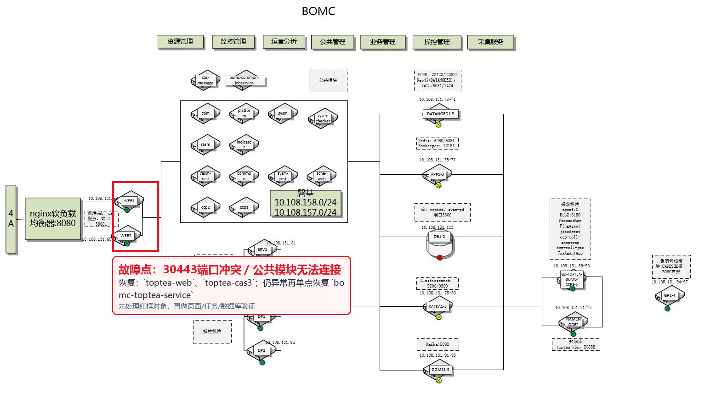

BOMC - 30443端口冲突与公共模块无法连接 故障处置手册
故障拓扑

图中标注对象为 BOMC 在 30443端口冲突与公共模块无法连接 场景下的主处理对象和恢复验证对象。处置时先确认主故障点，再扩展到依赖链路和业务验证，避免只根据单个告警对象做局部处理。
关键对象：
- BOMC 集群公共模块、资源模块和 svc 暴露链路：重点确认 30443 端口映射关系。
- ccsec 命名空间 / ccsec-server svc：确认是否抢占 30443 并造成错误转发。
- 10.108.131.68 / 10.108.131.69：WEB 主机，必要时恢复 toptea-web 和 toptea-cas3。
- 10.108.131.75-77：Redis / Zookeeper 伴生排查对象，不能替代主根因判断。
故障点标注与恢复对象
红框为本次故障优先处理点；恢复后再按蓝框/依赖链路完成验证。
| 标注 | 故障点/现象 | 优先恢复动作 | 需要重启/执行的服务 |
|---|---|---|---|
| 红框 | WEB/CAS 主机侧 30443 端口或公共模块链路异常 | 先查端口占用、SVC/连接配置和公共模块连通性 | toptea-web、toptea-cas3 |
| 扩展 | 主机侧恢复后 BOMC 入口仍不可用 | 进入 4A/B域磐基界面做服务单点恢复 | bomc-toptea-service，必要时核查 bomc-cas-message |
适用范围与故障判定
适用范围
遇到以下任一现象，进入本手册流程处理：
- BOMC 页面无法登录、无告警显示、无数据展示，或提示公共模块无法连接。
- 集群 svc 或端口 30443 映射异常，疑似请求被错误转发。
- Redis / Zookeeper 等伴生异常已处理但页面仍未恢复。
判定规则
| 如果看到 | 先做什么 | 判断结论 |
|---|---|---|
| 页面提示公共模块无法连接 | 核查 svc 与 30443 端口占用 | 优先按端口冲突或错误转发处理 |
| Redis / Zookeeper 异常已恢复但页面仍异常 | 继续排查公共模块和端口映射 | 伴生异常不能替代主根因 |
| 确认非 BOMC svc 占用 30443 | 备份后删除或调整冲突 svc | 恢复资源模块和 CAS 后复测 |
标准处置流程
- 记录告警时间、页面现象、公共模块报错和当前影响范围。
- 核查 Redis / Zookeeper 等伴生异常，但不在伴生异常处停止排查。
- 执行 svc 与 30443 端口占用检查，确认是否存在非 BOMC 服务抢占。
- 如确认冲突 svc，先备份定义，再删除或调整冲突服务。
- 按现场顺序恢复资源模块、CAS 服务和必要的 Web 服务。
- 验证登录页、公共模块、监控告警和 30443 占用关系均恢复正常。
关键检查命令
以下命令已按本故障场景去重整理；每条命令先说明用途，执行前按实际主机、路径、权限和变更流程确认。
核查 30443 端口占用
用于确认当前是否存在多个 svc 暴露或抢占 30443 端口，先定位冲突对象，不直接重启应用。
bash
kubectl get svc -A | grep 30443查看疑似冲突服务详情
用于确认 ccsec-server 的命名空间、端口映射和后端指向，删除或调整前必须先核实归属。
bash
kubectl describe svc ccsec-server -n ccsec备份冲突服务定义
用于保留回退依据；只有确认该 svc 为错误转发来源后，才进入删除或调整步骤。
bash
kubectl get svc ccsec-server -n ccsec -o yaml > /tmp/ccsec-server-svc-backup.yaml释放错误端口映射
用于解除非 BOMC 服务对 30443 的占用；执行后必须再次核查端口占用并验证 BOMC 页面。
bash
kubectl delete svc ccsec-server -n ccsec
kubectl get svc -A | grep 30443补充检查 Web/CAS 进程
端口冲突解除后若页面仍未恢复，再检查 BOMC Web/CAS 进程；进程存在但页面打不开时按假活处理。
bash
ps -ef | grep -E "toptea-web|toptea-cas3" | grep -v grep补充清理假活 Web/CAS 进程
仅在端口冲突解除后页面仍打不开、登录超时或服务无响应时执行；先用 ps 定位实际 PID，再结束旧进程并按 Web/CAS 启动顺序恢复。
bash
kill -9 <toptea-web_PID>
kill -9 <toptea-cas3_PID>
ps -ef | grep -E "toptea-web|toptea-cas3" | grep -v grep协同分工与通知口径
通知口径
谁负责什么
| 角色 | 负责范围 | 处置动作 |
|---|---|---|
| 一线运维 | 告警确认、现场操作、恢复验证 | 执行标准处置流程并记录结果 |
| 系统维护 / 厂商 | 应用服务、脚本、配置和程序逻辑 | 恢复服务并定位反复故障根因 |
| DBA / 平台支撑 | 数据库、中间件、主机和网络依赖 | 在扩展验证异常时介入处理 |
恢复验证清单
完成恢复动作后，按以下顺序验证：
- BOMC 关键页面或入口可正常访问。
- 相关告警已消除或回落到正常阈值。
- 最近日志不再持续出现同类错误关键字。
- 服务进程、端口和核心接口均恢复正常。
- 恢复后至少完成一次关键业务路径验证。
根因与预防
根因判断
- 直接根因：非 BOMC svc 暴露或抢占 30443 端口，导致 BOMC 请求被错误转发。
- 应用表现：登录、公共模块、监控告警和资源模块访问异常。
- 处置边界：Redis / Zookeeper 超连属于伴生或放大现象，不能替代端口冲突主根因判断。
长期预防
- 建立 BOMC 关键 svc 与端口暴露清单，重点纳入 30443。
- 对集群 svc 变更和端口暴露动作增加发布前校验。
- 增加公共模块、资源模块、CAS 链路和端口可达性巡检。
历史案例
| 序号 | 发生时间 | 故障现象 | 恢复手段 | 故障原因 | 处理时长 |
|---|---|---|---|---|---|
| 1 | 2026-01-17 08:20 | ... | 先完成Redis伴生异常排查，再删除... | 容器安全服务通过 svc 暴露 30443... | 8h40min |